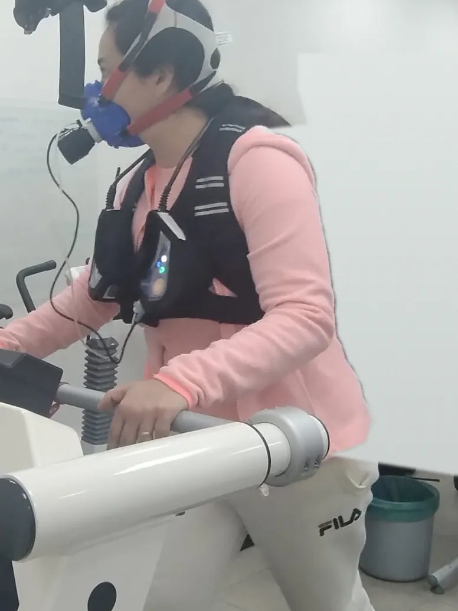
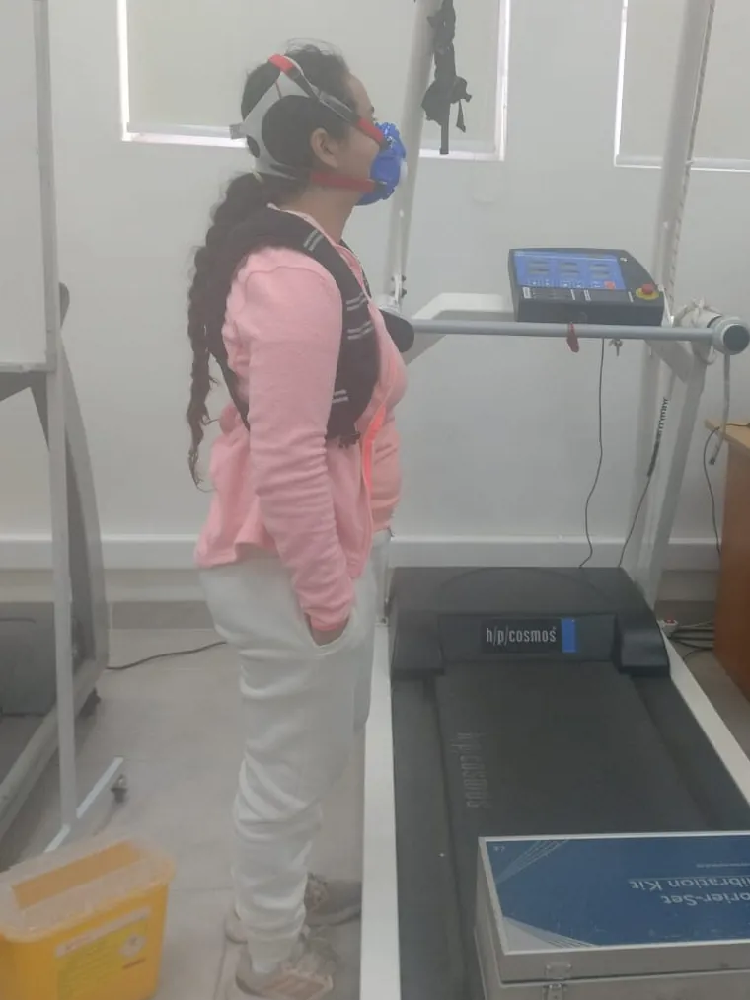

Estudio de la función pulmonar: qué exámenes existen y cuándo se piden
Espirometría, test de marcha, pimometría y poligrafía: para qué sirve cada uno y en qué casos se indican.
Leer artículoConsulta médica, kinesiología, exámenes y Unidad de la Mujer en siete ciudades de Chile. Reserva en minutos.
Profesionales de distintas disciplinas trabajando en una misma red, para que resuelvas tu atención sin dar vueltas.
Medicina general para todo el ciclo de vida: promoción, prevención, recuperación y rehabilitación, considerando a tu familia.
Agenda tu horaEvaluación y tratamiento centrados en tu movimiento, para recuperar funcionalidad y calidad de vida en cualquier etapa.
Comienza con una pre-evaluación kinesiológica: sin costo en Coquimbo.
Agenda tu horaConsejería nutricional, planificación de comidas y educación para construir hábitos de alimentación que cuiden tu salud.
Agenda tu horaEquipo de enfermeras y enfermeros que acompaña tu atención dentro de la red.
Comunicación, audición, sistema vestibular, motricidad orofacial y alimentación oral, en todas las edades.
Toma de muestras para tus exámenes, dentro de la misma red de atención.
La espirometría mide cuánto aire tienen tus pulmones y la velocidad con que lo movilizas. Es clave para evaluar tu función pulmonar.
Evalúa tu función pulmonar antes y después de un broncodilatador.
Mide la respuesta de tus pulmones al esfuerzo físico.
Mide el oxígeno que consumes y el CO₂ que eliminas durante el ejercicio. También lo realizamos en gimnasios.
Evalúa tu capacidad funcional al caminar.
Mide la fuerza de tus músculos respiratorios.
Registro de la actividad eléctrica del corazón.
Monitoreo de tu presión durante 24 horas, en tu rutina diaria.
Estudio respiratorio durante el sueño.


Mientras caminas o corres en una trotadora con una mascarilla, un equipo mide el oxígeno que consumes y el dióxido de carbono que eliminas en cada respiración. Así se evalúa tu capacidad aeróbica y cómo responden tus pulmones y tu corazón al esfuerzo.
También lo realizamos en gimnasios. Si tienes un gimnasio o centro deportivo, escríbenos para coordinarlo.
Tratamiento y rehabilitación del piso pélvico, guiados por kinesiología, para mujeres en distintas etapas de la vida.
Elige la sede más cercana al reservar. Los servicios disponibles varían según la ciudad.
Espirometría basal y post broncodilatador
Espirometría basal y post broncodilatador
Medicina general, kinesiología, pre-evaluación kinesiológica sin costo, electrocardiograma, espirometría y Holter de presión arterial
Medicina general, kinesiología y pre-evaluación kinesiológica
Consulta presencial
Kinesiología
Consulta presencial
¿Necesitas la dirección o el horario de una sede? Llámanos al (2) 2902 9517.
Selecciona el tipo de servicio y la sede, la especialidad y, si quieres, tu profesional.
Completa tu RUT o pasaporte y tu previsión, como Fonasa, y elige el horario.
Llega a tu atención. Si necesitas, confirma o anula desde la misma agenda.
¿Problemas con tu reserva? Escribe a gestionclinica@mediclife.cl
Una red de salud que se acerca a las personas y a la comunidad, con innovación y tecnología al servicio de una atención humana.
Facilitamos el acceso a los usuarios a nuestra red de salud, brindando una atención humana y de calidad, a través de la innovación y la tecnología, entregando alternativas de servicio de forma integral.
Además, entregamos soluciones integrales de salud con calidad técnica y de servicio, enfocándonos en administración y gestión en salud pública y privada.
Satisfacer las necesidades de nuestros usuarios de forma integral, incorporando estrategias innovadoras y entregando un servicio oportuno, resolutivo y de calidad, acercándonos a las personas y a la comunidad.
Mejorar la experiencia en salud, contribuyendo a la comodidad, tiempo y bienestar de las personas.
Entregamos soluciones integrales de salud con calidad técnica y de servicio, con foco en la administración y gestión en salud pública y privada.
Guías simples sobre exámenes y tratamientos, para que llegues a tu atención con todo claro.
Espirometría, test de marcha, pimometría y poligrafía: para qué sirve cada uno y en qué casos se indican.
Leer artículoUna guía simple sobre el examen que evalúa cómo funcionan tus pulmones: qué mide, cuándo se pide y qué cuidados tener antes de hacértelo.
Leer artículoEscapes de orina, posparto o menopausia: el piso pélvico se puede evaluar y entrenar. Te contamos cuándo pedir una evaluación.
Leer artículoPor qué tu médico puede pedirte un monitoreo de presión de 24 horas, cómo es usar el equipo y qué hacer para obtener un buen resultado.
Leer artículoSi no encuentras tu respuesta, llámanos o escríbenos.
Sí. MedicLife tiene convenio con Fonasa. Al reservar en la agenda en línea, selecciona tu previsión.
En la agenda en línea eliges el tipo de servicio y la sede, la especialidad y, si quieres, el profesional. Luego ingresas tu RUT o pasaporte y tu previsión.
Desde la misma agenda en línea, en la opción para confirmar o anular citas. Si tienes problemas con tu reserva, escribe a gestionclinica@mediclife.cl.
Santiago, San Bernardo, Talagante, San Antonio, Coquimbo, Antofagasta y Tocopilla. Los servicios varían según la sede; revisa la sección Sedes.
Es una primera evaluación con un kinesiólogo para orientar tu tratamiento. En Coquimbo es sin costo, y en Santiago también puedes reservarla.
Sí. Entregamos gestión y asesorías en salud para empresas e instituciones públicas y privadas. Escríbenos desde el formulario de contacto.
Resolvemos tus dudas sobre servicios, sedes, convenios o asesorías para empresas.
Elige tu sede y especialidad, y reserva en línea con tu previsión.